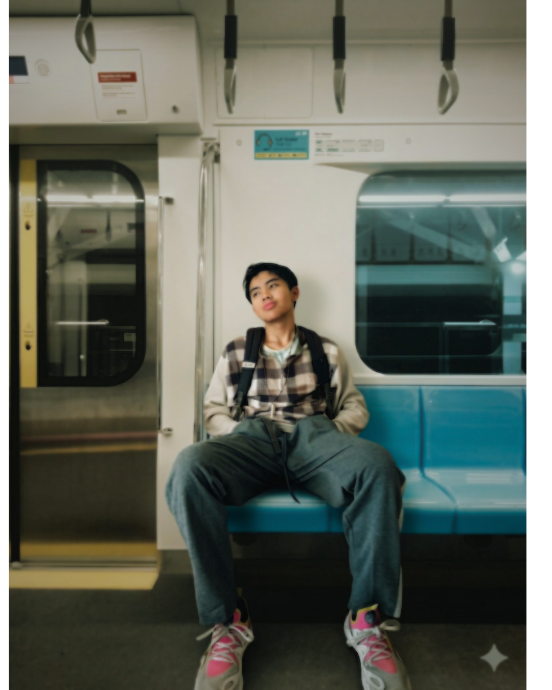

Lutfi Alhamsyah
Menjembatani baris kode, tata kelola sistem, dan komunikasi manusia.
"Tidak Perlu Kata-Kata yang penting aksi nyata"
Recap Sorotan
Sentuh untuk jeda
Placeholder Recap Satu

Placeholder Recap Dua

Placeholder Recap Tiga

Placeholder Recap Empat
Placeholder Recap Satu
Placeholder Recap Dua
Placeholder Recap Tiga
Placeholder Recap Empat
Tentang Saya
IT Management, Governance & Technical Execution
Mahasiswa Teknik Informatika yang menolak terjebak di balik layar kode semata. Fokus utama saya adalah menerjemahkan kerumitan teknis menjadi solusi yang terstruktur, terukur, dan mudah dipahami—baik dalam merancang arsitektur produk, mengelola proyek teknologi, maupun menyusun tata kelola sistem (*IT Governance*).
IT Project & Product
Mengorkestrasi alur kerja tim, menyusun PRD yang presisi, dan memastikan produk rilis tepat sasaran.
IT Governance & Consultant
Menyelaraskan strategi teknologi dengan kebutuhan organisasi agar efisien dan minim risiko.
IT Educator & Communicator
Menyederhanakan konsep abstrak algoritma dan AI menjadi bahasa manusia yang aplikatif.
Arsip & Dokumentasi
Tips Interaksi: Klik dan tahan (long-press) pada gambar untuk membaca cerita di baliknya.
Matriks Kompetensi
Pemetaan kapabilitas berdasarkan tingkat penguasaan praktis (4 Blok = Core Focus, 3 Blok = Practitioner, 2 Blok = Fundamental).